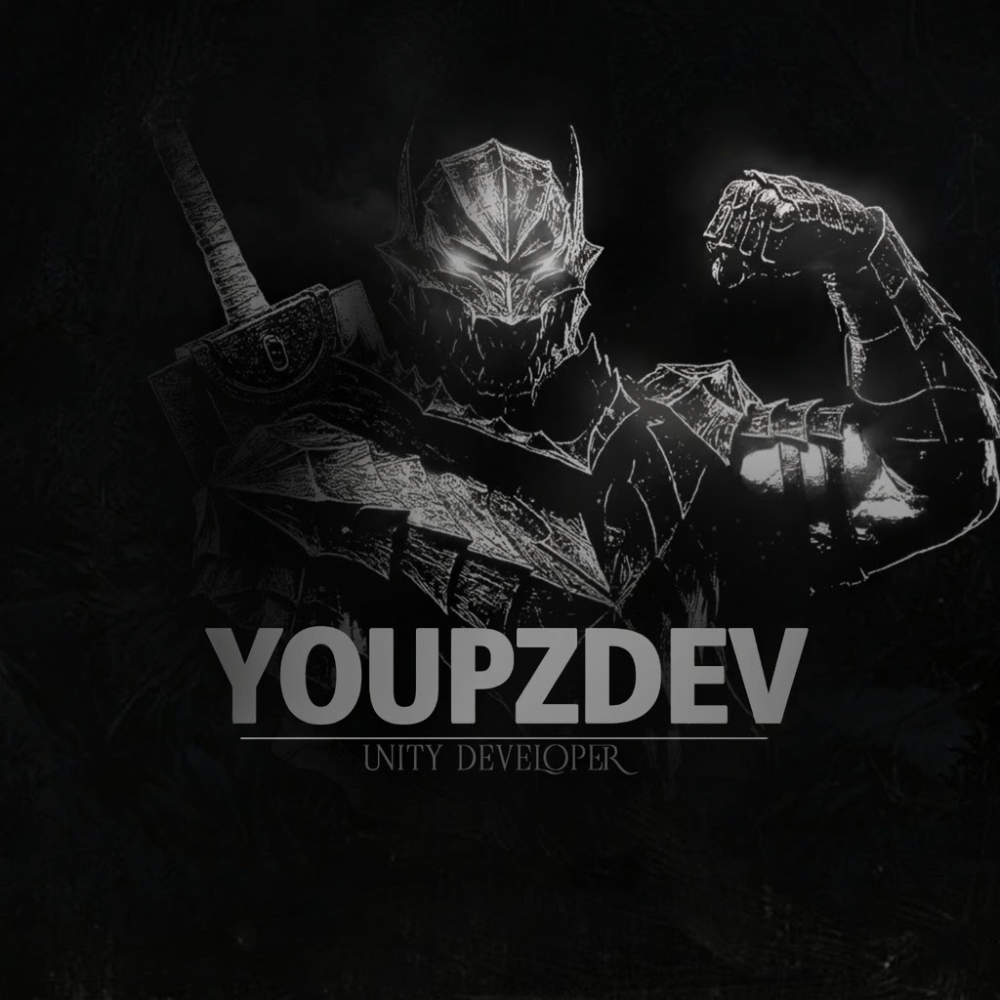

TIKTOK PREP
BY YOUPZDEV
ENGINE CHECK…
UNIQUE VS TIKTOK
Лёгкая компрессия + патч MP4-контейнера — размер меньше, качество почти без потерь.
Обходит автодетект повторного контента: меняет фингерпринт, счётчик кадров и метаданные.
СЖАТИЕ ~5×РАЗДУВ КАДРОВ ×10
НОВЫЙ ФИНГЕРПРИНТFASTSTART
Перетащите видео сюда
MP4 на выходе · MOV · MKV · WEBM на входе — загрузи и жми START
ЧТО ДЕЛАЕТ ПАТЧ
сначала компрессия, затем патч
- Компрессия. Даунскейл во вписывание в кадр TikTok (до 1080p) + x264 CRF 22, VBV 15 Мбит/с, аудио AAC 48 кГц — размер падает в разы, качество почти без потерь.
- Раздувание счётчика кадров. Дописываются фиктивные сэмплы, таблицы stsz / stts / stsc / stco пересчитываются — контейнер показывает ×10 кадров, реальные данные целы.
- Чистка отпечатка. Обнуляется compressorname, метаданные переписываются под новый уникальный ID — хэш и фингерпринт меняются.
ОЧЕРЕДЬ 0
ПРОПАТЧЕНО0
КАДРОВ БЫЛО—
СТАЛО—
РАЗДУВ—